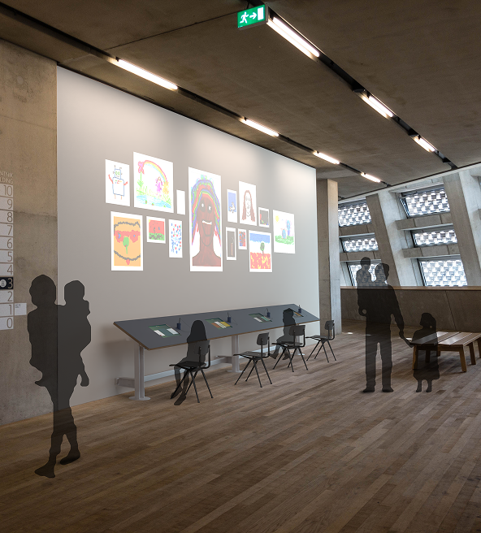
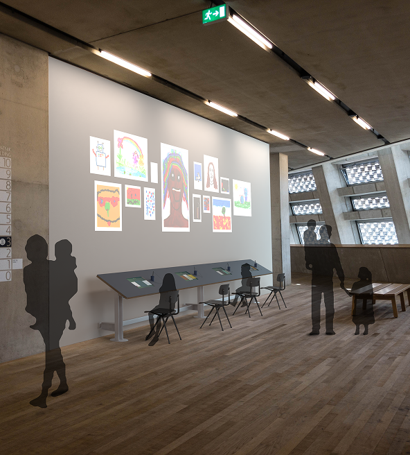
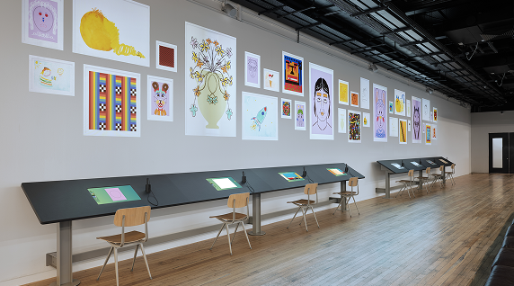
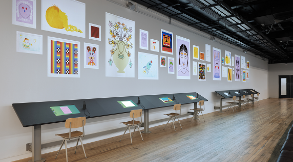

The Workers · Tate Draw
Role: Developer
Tate Modern & Tate Britain, London July 2022 - Ongoing
Tate Draw is an installation that playfully explores drawing. The audience can choose a variety of drawing modes and canvas. Once finished, their drawing is displayed in a projected animated gallery.
I developed the custom drawing engine behind the experience, building dynamic tools like brushes, eraser, and undo functionality. The system features multiple playful drawing modes — including Mirror, Pixel, Single Line, and Memory — each designed to inspire creativity in a different way.
After the success of the first TateDraw, other locations were added.
I contributed to select the new location by producing renders and mockups to visualise installation layout, projection mapping, and overall visitor flow.
 
